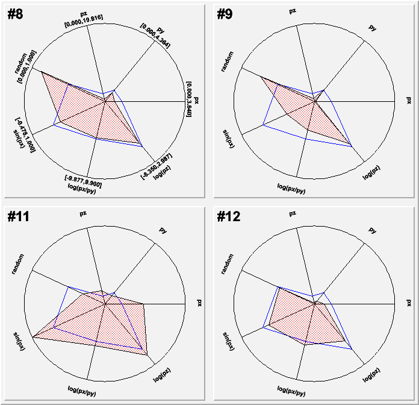
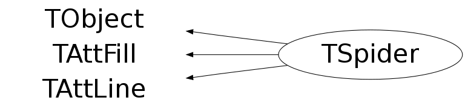

class TSpider: public TObject, public TAttFill, public TAttLine
Spider class
- The spider view: With each points on the axes is drawn a polyline.
- The segment view: For each data member is drawn an arc segment with the radius corresponding to the event.
{kind=link}

{
TCanvas *c1 = new TCanvas("c1","TSpider example",200,10,700,700);
TFile *f = new TFile("$(ROOTSYS)/tutorials/hsimple.root");
if (!f || f->IsZombie()) {
printf("Please run <ROOT location>/tutorials/hsimple.C before.");
return;
}
TNtuple* ntuple = f->Get("ntuple");
TString varexp = "px:py:pz:random:sin(px):log(px/py):log(pz)";
TString select = "px>0 && py>0 && pz>0";
TString options = "average";
TSpider *spider = new TSpider(ntuple,varexp.Data(),select.Data(),options.Data());
spider->Draw();
c1->ToggleEditor();
c1->Selected(c1,spider,1);
return c1;
}Function Members (Methods)
public:
| TSpider() | |
| TSpider(const TSpider&) | |
| TSpider(TTree* tree, const char* varexp, const char* selection, Option_t* option = "", Long64_t nentries = 0, Long64_t firstentry = 0) | |
| virtual | ~TSpider() |
| void | TObject::AbstractMethod(const char* method) const |
| void | AddSuperposed(TSpider* sp) |
| void | AddVariable(const char* varexp)MENU |
| virtual void | TObject::AppendPad(Option_t* option = "") |
| virtual void | TObject::Browse(TBrowser* b) |
| static TClass* | Class() |
| virtual const char* | TObject::ClassName() const |
| virtual void | TObject::Clear(Option_t* = "") |
| virtual TObject* | TObject::Clone(const char* newname = "") const |
| virtual Int_t | TObject::Compare(const TObject* obj) const |
| virtual void | TObject::Copy(TObject& object) const |
| virtual void | TObject::Delete(Option_t* option = "")MENU |
| void | DeleteVariable(const char* varexp)MENU |
| Int_t | TAttLine::DistancetoLine(Int_t px, Int_t py, Double_t xp1, Double_t yp1, Double_t xp2, Double_t yp2) |
| virtual Int_t | DistancetoPrimitive(Int_t px, Int_t py) |
| virtual void | Draw(Option_t* options = "") |
| virtual void | TObject::DrawClass() constMENU |
| virtual TObject* | TObject::DrawClone(Option_t* option = "") constMENU |
| virtual void | TObject::Dump() constMENU |
| virtual void | TObject::Error(const char* method, const char* msgfmt) const |
| virtual void | TObject::Execute(const char* method, const char* params, Int_t* error = 0) |
| virtual void | TObject::Execute(TMethod* method, TObjArray* params, Int_t* error = 0) |
| virtual void | ExecuteEvent(Int_t event, Int_t px, Int_t py) |
| virtual void | TObject::Fatal(const char* method, const char* msgfmt) const |
| virtual TObject* | TObject::FindObject(const char* name) const |
| virtual TObject* | TObject::FindObject(const TObject* obj) const |
| Color_t | GetAverageFillColor() const |
| Style_t | GetAverageFillStyle() const |
| Color_t | GetAverageLineColor() const |
| Style_t | GetAverageLineStyle() const |
| Width_t | GetAverageLineWidth() const |
| Long64_t | GetCurrentEntry() const |
| Bool_t | GetDisplayAverage() const |
| virtual Option_t* | TObject::GetDrawOption() const |
| static Long_t | TObject::GetDtorOnly() |
| Long64_t | GetEntriesToProcess(Long64_t firstentry, Long64_t nentries) const |
| virtual Color_t | TAttFill::GetFillColor() const |
| virtual Style_t | TAttFill::GetFillStyle() const |
| virtual const char* | TObject::GetIconName() const |
| virtual Color_t | TAttLine::GetLineColor() const |
| virtual Style_t | TAttLine::GetLineStyle() const |
| virtual Width_t | TAttLine::GetLineWidth() const |
| virtual const char* | TObject::GetName() const |
| Int_t | GetNx() const |
| Int_t | GetNy() const |
| virtual char* | TObject::GetObjectInfo(Int_t px, Int_t py) const |
| static Bool_t | TObject::GetObjectStat() |
| virtual Option_t* | TObject::GetOption() const |
| Bool_t | GetSegmentDisplay() const |
| virtual const char* | TObject::GetTitle() const |
| virtual UInt_t | TObject::GetUniqueID() const |
| void | GotoEntry(Long64_t e)MENU |
| void | GotoFollowing()MENU |
| void | GotoNext()MENU |
| void | GotoPreceding()MENU |
| void | GotoPrevious()MENU |
| virtual Bool_t | TObject::HandleTimer(TTimer* timer) |
| virtual ULong_t | TObject::Hash() const |
| virtual void | TObject::Info(const char* method, const char* msgfmt) const |
| virtual Bool_t | TObject::InheritsFrom(const char* classname) const |
| virtual Bool_t | TObject::InheritsFrom(const TClass* cl) const |
| virtual void | TObject::Inspect() constMENU |
| void | TObject::InvertBit(UInt_t f) |
| virtual TClass* | IsA() const |
| virtual Bool_t | TObject::IsEqual(const TObject* obj) const |
| virtual Bool_t | TObject::IsFolder() const |
| Bool_t | TObject::IsOnHeap() const |
| virtual Bool_t | TObject::IsSortable() const |
| virtual Bool_t | TAttFill::IsTransparent() const |
| Bool_t | TObject::IsZombie() const |
| virtual void | TObject::ls(Option_t* option = "") const |
| void | TObject::MayNotUse(const char* method) const |
| virtual void | TAttFill::Modify() |
| virtual Bool_t | TObject::Notify() |
| void | TObject::Obsolete(const char* method, const char* asOfVers, const char* removedFromVers) const |
| static void | TObject::operator delete(void* ptr) |
| static void | TObject::operator delete(void* ptr, void* vp) |
| static void | TObject::operator delete[](void* ptr) |
| static void | TObject::operator delete[](void* ptr, void* vp) |
| void* | TObject::operator new(size_t sz) |
| void* | TObject::operator new(size_t sz, void* vp) |
| void* | TObject::operator new[](size_t sz) |
| void* | TObject::operator new[](size_t sz, void* vp) |
| TSpider& | operator=(const TSpider&) |
| virtual void | Paint(Option_t* options) |
| virtual void | TObject::Pop() |
| virtual void | TObject::Print(Option_t* option = "") const |
| virtual Int_t | TObject::Read(const char* name) |
| virtual void | TObject::RecursiveRemove(TObject* obj) |
| virtual void | TAttFill::ResetAttFill(Option_t* option = "") |
| virtual void | TAttLine::ResetAttLine(Option_t* option = "") |
| void | TObject::ResetBit(UInt_t f) |
| virtual void | TObject::SaveAs(const char* filename = "", Option_t* option = "") constMENU |
| virtual void | TAttFill::SaveFillAttributes(ostream& out, const char* name, Int_t coldef = 1, Int_t stydef = 1001) |
| virtual void | TAttLine::SaveLineAttributes(ostream& out, const char* name, Int_t coldef = 1, Int_t stydef = 1, Int_t widdef = 1) |
| virtual void | TObject::SavePrimitive(ostream& out, Option_t* option = "") |
| void | SetAverageFillColor(Color_t col) |
| void | SetAverageFillStyle(Style_t sty) |
| void | SetAverageLineColor(Color_t col) |
| void | SetAverageLineStyle(Style_t sty) |
| void | SetAverageLineWidth(Width_t wid) |
| void | TObject::SetBit(UInt_t f) |
| void | TObject::SetBit(UInt_t f, Bool_t set) |
| void | SetDisplayAverage(Bool_t disp)TOGGLE |
| virtual void | TObject::SetDrawOption(Option_t* option = "")MENU |
| static void | TObject::SetDtorOnly(void* obj) |
| virtual void | TAttFill::SetFillAttributes()MENU |
| virtual void | SetFillColor(Color_t col) |
| virtual void | SetFillStyle(Style_t sty) |
| virtual void | TAttLine::SetLineAttributes()MENU |
| virtual void | SetLineColor(Color_t col) |
| virtual void | SetLineStyle(Style_t sty) |
| virtual void | SetLineWidth(Width_t wid) |
| void | SetNdivRadial(Int_t div)MENU |
| void | SetNx(UInt_t nx)MENU |
| void | SetNy(UInt_t ny)MENU |
| static void | TObject::SetObjectStat(Bool_t stat) |
| void | SetSegmentDisplay(Bool_t seg)TOGGLE |
| void | SetSelectionExpression(const char* selexp) |
| void | SetShowRange(Bool_t showrange) |
| virtual void | TObject::SetUniqueID(UInt_t uid) |
| void | SetVariablesExpression(const char* varexp) |
| virtual void | ShowMembers(TMemberInspector& insp) |
| virtual void | Streamer(TBuffer& b) |
| void | StreamerNVirtual(TBuffer& b) |
| void | SuperposeTo(TSpider* sp) |
| virtual void | TObject::SysError(const char* method, const char* msgfmt) const |
| Bool_t | TObject::TestBit(UInt_t f) const |
| Int_t | TObject::TestBits(UInt_t f) const |
| virtual void | TObject::UseCurrentStyle() |
| virtual void | TObject::Warning(const char* method, const char* msgfmt) const |
| virtual Int_t | TObject::Write(const char* name = 0, Int_t option = 0, Int_t bufsize = 0) |
| virtual Int_t | TObject::Write(const char* name = 0, Int_t option = 0, Int_t bufsize = 0) const |
protected:
| virtual void | TObject::DoError(int level, const char* location, const char* fmt, va_list va) const |
| void | TObject::MakeZombie() |
private:
| void | DrawPoly(Option_t* options) |
| void | DrawPolyAverage(Option_t* options) |
| void | DrawSlices(Option_t* options) |
| void | DrawSlicesAverage(Option_t* options) |
| Int_t | FindTextAlign(Double_t theta) |
| Double_t | FindTextAngle(Double_t theta) |
| void | InitArrays(Int_t newsize) |
| void | InitVariables(Long64_t firstentry, Long64_t nentries) |
| void | SetCurrentEntries() |
| void | SyncFormulas() |
| void | UpdateView() |
Data Members
public:
| enum TObject::EStatusBits { | kCanDelete | |
| kMustCleanup | ||
| kObjInCanvas | ||
| kIsReferenced | ||
| kHasUUID | ||
| kCannotPick | ||
| kNoContextMenu | ||
| kInvalidObject | ||
| }; | ||
| enum TObject::[unnamed] { | kIsOnHeap | |
| kNotDeleted | ||
| kZombie | ||
| kBitMask | ||
| kSingleKey | ||
| kOverwrite | ||
| kWriteDelete | ||
| }; |
protected:
| Color_t | TAttFill::fFillColor | fill area color |
| Style_t | TAttFill::fFillStyle | fill area style |
| Color_t | TAttLine::fLineColor | line color |
| Style_t | TAttLine::fLineStyle | line style |
| Width_t | TAttLine::fLineWidth | line width |
private:
| Bool_t | fAngularLabels | True if the labels are oriented according to their axis. |
| Int_t | fArraySize | Actual size of the arrays. |
| Double_t* | fAve | [fNcols] Average value of each variable. |
| TPolyLine* | fAveragePoly | Polygon representing the average variables value. |
| TArc** | fAverageSlices | ! Average slices. |
| TCanvas* | fCanvas | ! Pointer to the mother pad. |
| Long64_t* | fCurrentEntries | ![fNx*fNy] current selected entries; |
| Bool_t | fDisplayAverage | Display or not the average. |
| Long64_t | fEntry | Present entry number in fTree. |
| Long64_t | fFirstEntry | First entry. |
| Bool_t | fForceDim | Force dimension. |
| TList* | fFormulas | List of all formulas to represent. |
| TList* | fInput | Used for fSelector. |
| TTreeFormulaManager* | fManager | Coordinator for the formulas. |
| Double_t* | fMax | [fNcols] Maximum value of the variables. |
| Double_t* | fMin | [fNcols] Minimum value of the variables. |
| UInt_t | fNcols | Number of variables. |
| Long64_t | fNentries | Number of entries. |
| UInt_t | fNx | Number of horizontal spider plots. |
| UInt_t | fNy | Number of vertical spider plots. |
| TGraphPolargram* | fPolargram | Polar graph. |
| TList* | fPolyList | Polygons representing the variables. |
| Bool_t | fSegmentDisplay | True if displaying a segment plot. |
| TTreeFormula* | fSelect | Selection condition |
| TSelectorDraw* | fSelector | ! Selector. |
| Bool_t | fShowRange | Show range of variables or not. |
| TList* | fSuperposed | Superposed spider plots. |
| TTree* | fTree | Pointer to the TTree to represent. |
Class Charts
{kind=link}
{kind=link}
{kind=link}
{kind=link}

Function documentation
TSpider(TTree* tree, const char* varexp, const char* selection, Option_t* option = "", Long64_t nentries = 0, Long64_t firstentry = 0)
Normal constructor. Options are:
void DrawPolyAverage(Option_t* options)
Paint the Polygon representing the average value of the variables.
void DrawSlicesAverage(Option_t* options)
Draw the slices representing the average for the segment plot.
Int_t FindTextAlign(Double_t theta)
Find the alignement rule to apply for TText::SetTextAlign(Short_t).
Double_t FindTextAngle(Double_t theta)
Determine the orientation of the polar labels according to their angle.
Long64_t GetEntriesToProcess(Long64_t firstentry, Long64_t nentries) const
return the number of entries to be processed this function checks that nentries is not bigger than the number of entries in the Tree or in the associated TEventlist
void InitVariables(Long64_t firstentry, Long64_t nentries)
Browse the tree to set the min, max and average value of each variable of fVar.
void SetVariablesExpression(const char* varexp)
Compile the variables expression from the given string varexp.
TSpider()